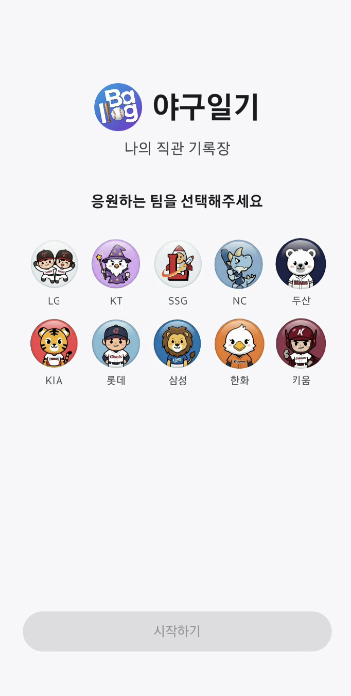
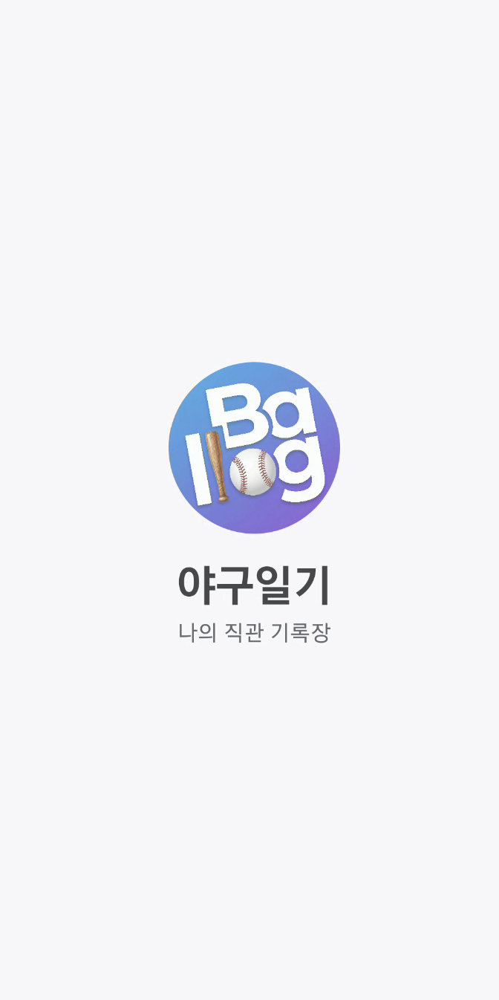
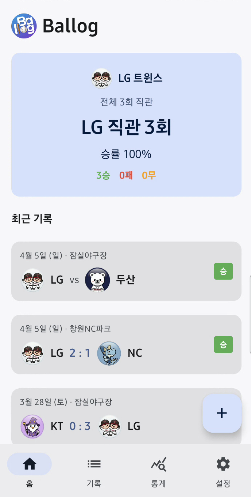
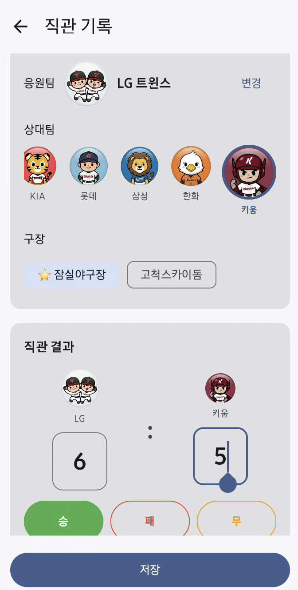
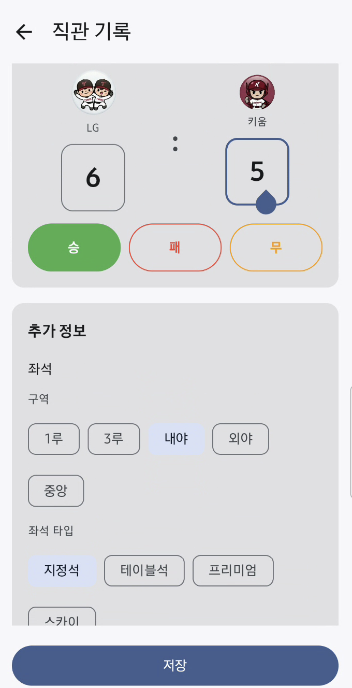
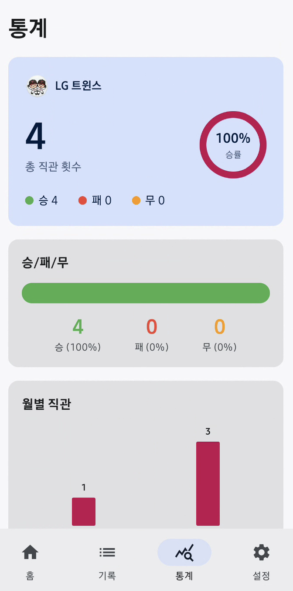
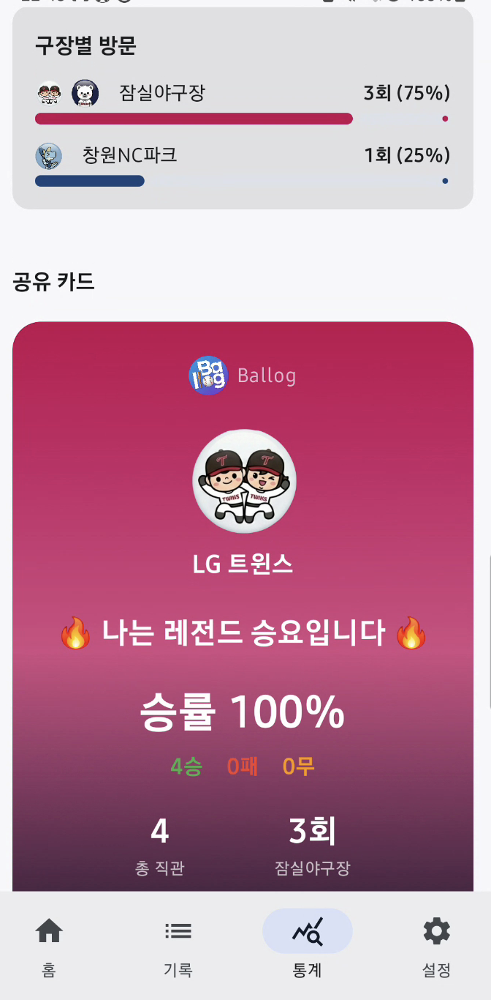
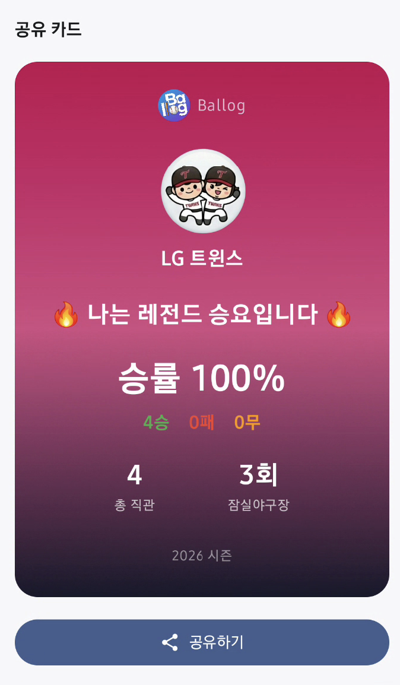

✨ 스마트한 KBO 직관 라이프
직관의 감동을
기록하다
나만의 KBO 직관 기록장, 야구일기.
스코어, 좌석, 그리고 그 날의 특별한 감동까지 간편하게 남기세요.

지원 구장
잠실종합운동장 ·
수원KT위즈파크 ·
인천SSG랜더스필드 ·
창원NC파크 ·
광주기아챔피언스필드 ·
사직야구장 ·
대구삼성라이온즈파크 ·
한화생명이글스파크 ·
고척스카이돔
단 하나뿐인 기록
야구일기가 선사하는 직관 최적화 기능들
초간편 직관 기록
날짜, 응원팀, 상대팀, 구장을 선택하고 경기 결과와 스코어를 몇 번의 터치로 입력할 수 있습니다.
한눈에 보는 달력
월별 캘린더를 통해 내가 언제 직관을 갔는지, 어떤 결과를 얻었는지 직관적으로 확인하세요.
나만의 승률 통계
승률, 월별 트렌드, 구장별 방문 횟수를 확인하고 '승요/패요' 카드를 친구와 쉽고 재밌게 공유하세요.
생생한 사진 첨부
눈부셨던 그 날의 감동이 담긴 직관 사진을 여러 장 첨부하여 더욱 생생한 추억으로 영원히 간직하세요.
한눈에 보는 야구일기
깔끔하고 사용하기 쉬운 인터페이스를 경험하세요.






